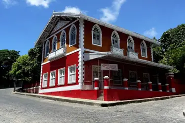

Sobre a Cidade
Olinda é uma cidade colonial na costa nordeste do Brasil, perto da cidade do Recife. Fundada em 1535 pelos portugueses, foi construída em encostas íngremes e distingue-se pela arquitetura do século XVIII, com igrejas barrocas, conventos, mosteiros e casas de cores vivas. Originalmente um centro da indústria da cana-de-açúcar, é agora conhecida como uma colónia de artistas, com diversas galerias, oficinas e museus.
Clima
Temperatura: 28 °C
Vento: 15 km/h
Sensação Térmica: